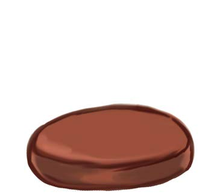
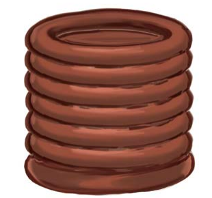
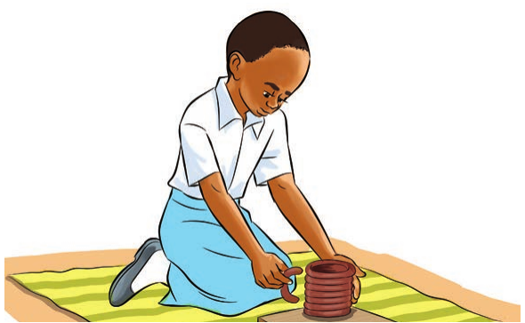
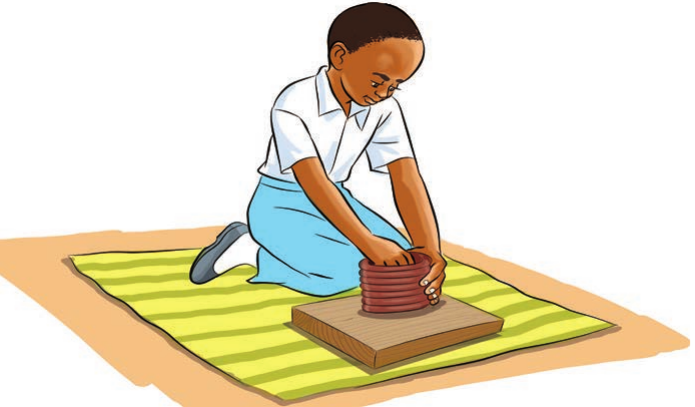

Kufinyanga maumbo mbalimbali
Kufinyanga umbo la kikombe
Hatua za kufinyanga umbo la kikombe




Shughuli ya kufanya 2
Finyanga maumbo ya vitu hivi:
- Ng'ombe
- Meza
- Redio
- Gari
- Nyumba
Kufinyanga maumbo mbalimbali




Finyanga maumbo ya vitu hivi: